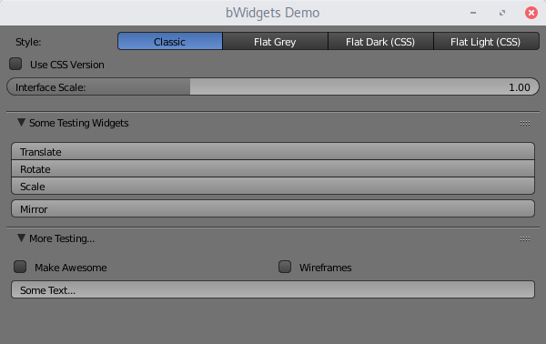
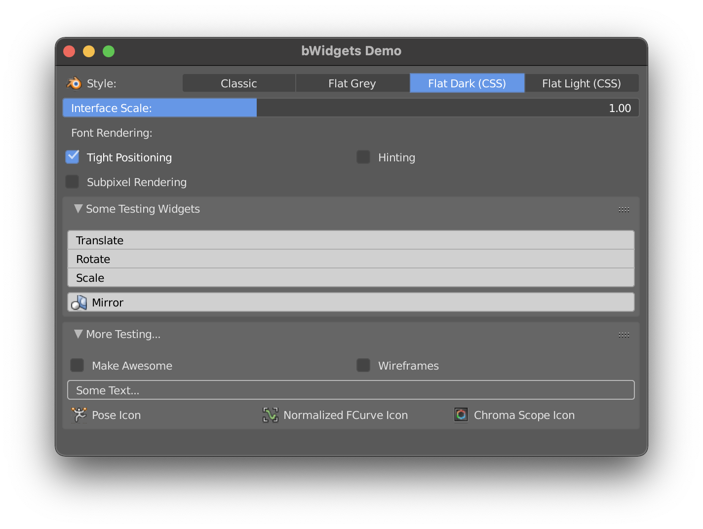
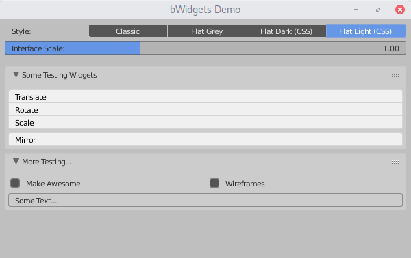

bWidgets is a cross-platform widget toolkit, designed specifically for Blender, but reusable as a standalone library.
The goal of bWidgets is to be a superior replacement of the current widget code that should allow easier UI development for the years to come. Aside from fixing many problems in our source code, it should help addressing some long standing usability issues.

As of now, bWidgets only supports a fraction of the features it would need to be a viable alternative to our current code. Most foundations are laid though, it's time to step up the game by gradually porting widgets from Blender to bWidgets. First the drawing only, later more components (user input handling, layout management, popup management, etc.).
Note that an initial test build where Blender used bWidgets to draw some of its buttons was done some time ago. It will soon be updated and the source code published.
The bWidgets source code can be found on GitHub.
A "b"-prefix is a common convention in Blender's source code to mark internal Blender C-structs. The name "bWidgets" refers to this. It's fine to pronounce bWidgets as "Blender-widgets" too.
Motivation
Main motivations for bWidgets come from Blender, namely:
More powerful, yet simpler theme-system for Blender
Every user has a different taste when it comes to visual style of UI elements. While some like a modern "flat" style, others can't stand it and prefer more classic ones.
Even though there are many theme options in Blender, the looks it can achieve are rather limited. Adding more theme settings is not an option, there already are way too many (see T45352). Instead we should rethink our approach to theming completely.bWidgets supports style presets, which would be the base of a much deeper integrated theme system. Styles were developed with the goal to support style sheet languages - namely CSS - in mind. Check the Current Features section to see examples of CSS styles in the bWidgets Demo application.
With these CSS styles as a core, themes would have much more control over the visual look of Blender than current themes. Users would be able to select such a theme (of course they could also install new ones) and manipulate just the base colors of it.
For the majority of users, this should be more than enough control. For advanced cases, the CSS files give maximum control. Projects like GTK+/GNOME do something similar, and it seems to work pretty well.Major Rewrite of Blender's widget code
A rather major refactor of Blender's widget code is really needed. It is a prime time example of spaghetti code produced over decades.
bWidgets would be the base of such a major refactor. It was carefully designed with current needs and long-term plans in mind.
The Current Blender widget code vs. bWidgets page discusses this in length.Unit- and Regression-Testing
Because of various reasons, Blender currently doesn't have any unit- or regression-tests for its UI code. bWidgets comes with a design that should allow extensive test coverage. A testing framework is builtin too.
Sharing Blender's widget code with other apps
The look and feel of an application is an important part of its branding and user-experience. bWidgets allows us to share the widget code across applications, creating a consistent experience over more parts of the Blender infrastructure. For example the Blender Animation Player, the Cycles standalone and the Blender .msi installer could get a unified look and feel.
But, even better, we could build a WYSIWYG UI design application for Blender. Allowing us to build prototypes and mockups with graphical tools (like JavaFX Scene Builder or Qt Quick Designer).
This is more of a bonus that we can get with rather small effort. It's not advisable for 3rd parity apps to use bWidgets in the near future.
More conventional code design
There are many existing widget toolkits out there and a number of patterns or conventions have proven themselves over the years. bWidgets incorporates them which should bring great benefits. The design was also influenced by other toolkits (such as Qt), making it easier for developers to get into bWidgets if they used common widget toolkits before.
Reasons on why Blender should not just go with an existing toolkit are described here.
Role of bWidgets
bWidgets is purely about widgets. Everything that is not directly related to widgets is out of scope and not part of bWidgets. For example it does not contain a window-manager, a drawing-backend (like OpenGL) or an event-system. Instead it provides interfaces for the application to implement the necessary procedures. This way the role, or scope of bWidgets stays limited to the widgets themselves.
Current Features
Currently, bWidgets basically contains a few widget definitions with simple drawing and handling mimicking Blender. It further supports:
- An initial style preset system designed to work with CSS (custom styles not supported yet).
A graphics framework independent drawing system
Basically a painter object defines geometry as polygons and draws them through a paint-engine. The paint-engine is created by the application that uses bWidgets. It can be a paint-engine for OpenGL drawing, Vulcan drawing, rendering to an image, HTML/CSS export, etc.
- Scaling
- Primitive gradient drawing
- Anti-aliasing for widget outlines
The demo application has basic CSS support, a primitive layout system, font drawing using FreeType2, GLSL shader support, scrolling and DPI scaling. Most buttons are dummies showing off the bWidgets feature set.
The following styles are defined via CSS and based on mockups by Pablo Vazquez:


Further, there is a documentation and unit testing framework for both bWidgets and its demo application.
Generated by
 1.8.18
1.8.18